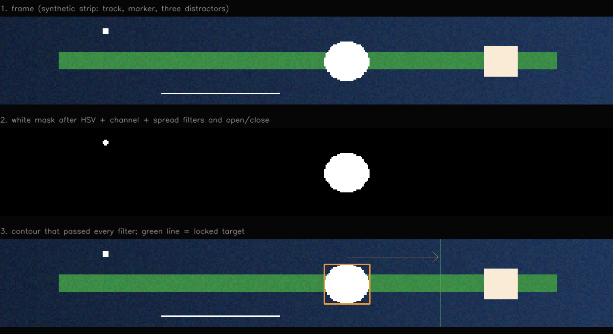
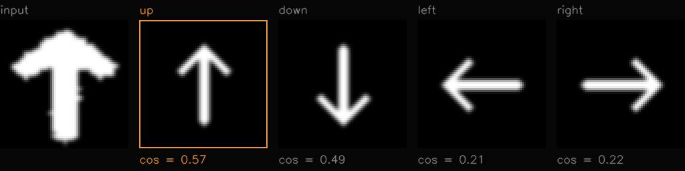

reading a rectangle of the screen with opencv
two small Python tools that look at one rectangle of the screen, work out what's in it, and press keys in response. it's a control loop where a human is just a slow, noisy feedback controller. the interesting part isn't the key press, it's getting a reliable answer out of noisy pixels sixty times a second.
picking the region once
both tools start from a region selector built in Tkinter. it grabs a screenshot, you draw rectangles on it (zoom with the wheel, pan, undo the last one), and it saves them to a JSON file the trackers load on the next start. it can also sample a color by clicking a pixel, which is how the second tool learns what "green" means on this particular screen. capturing only the selected region with mss keeps every frame small enough to process at 60fps.
tool 1: follow a marker
the first tracker follows one bright marker sliding along a thin strip and keeps it aligned with a target. detection is a stack of filters. first only near-pure-white pixels survive: a narrow HSV band, every channel above 245, and channels within 8 of each other, so tinted "almost white" is rejected. then morphological opening and closing remove specks and heal holes.
hsv_mask = cv2.inRange(hsv, MARKER_LOWER, MARKER_UPPER) # bright, unsaturated
bright_mask = (min_ch >= WHITE_MIN_CHANNEL).astype(np.uint8) * 255 # every channel high
spread_mask = ((max_ch - min_ch) <= WHITE_MAX_CHANNEL_SPREAD).astype(np.uint8) * 255 # no tint
mask = cv2.bitwise_and(cv2.bitwise_and(hsv_mask, bright_mask), spread_mask)
mask = cv2.morphologyEx(mask, cv2.MORPH_OPEN, OPEN_KERNEL, iterations=1) # drop specks
mask = cv2.morphologyEx(mask, cv2.MORPH_CLOSE, CLOSE_KERNEL, iterations=2) # heal holes
the remaining contours are filtered by absolute size, share of the frame, aspect ratio and solidity (area against convex hull), and whatever survives is scored on solidity, fill and squareness. color finds the candidates, shape decides which one is real.
raw detections flicker, so a small tracker smooths the box with an exponential blend and bridges up to six missed frames before giving up.
a = SMOOTHING_ALPHA # 0.5
self.smoothed = tuple(a * r + (1 - a) * s for r, s in zip(raw_box, self.smoothed))
...
self.missed += 1
if self.missed > MAX_MISSED_FRAMES: # 6
self.smoothed = Nonethe target is the marker's position when it first appears, locked only after three stable frames so a single bright speck can't set it, and cleared the moment the marker disappears.
the controller is the piece i'm happiest with, because it uses hysteresis. it starts correcting only when the error leaves an outer tolerance (7 pixels, scaled up for bigger markers) and stops only when it's back inside a much tighter inner zone, holding the key instead of tapping it. with a single threshold the output chatters around the target; with two, it settles.
# condensed from the controller (key names changed)
tolerance = max(TOLERANCE_PX, target_half_width * 0.1) # outer zone
release_zone = 2 # inner zone, in pixels
if self.held_key is None and abs(diff) <= tolerance:
return None # close enough, don't start
if abs(diff) <= release_zone:
self._release_held_key() # arrived, let go
return None
self._hold_key("left" if diff > 0 else "right")every threshold lives in a separate config module that the tracker reloads while it runs, checking the file's modified time twice a second. tuning means editing a number and watching the overlay, not restarting.
if os.path.getmtime(CONFIG_PATH) > self.last_mtime:
apply_config(importlib.reload(self.module_ref)) # new numbers, same processtool 2: read arrows and progress lines
the second tool reads a row of up to five or eight arrows, each with a progress line. every arrow slot is a small region. the white blob inside it is cropped, resized to 64×64 and compared with four templates (up, down, left, right) that the code draws itself with OpenCV, using cosine similarity. it only accepts an answer when the best match clearly beats the runner-up.
normalized = cv2.resize(crop, (64, 64), interpolation=cv2.INTER_NEAREST)
normalized = cv2.GaussianBlur(normalized, (5, 5), 0).astype(np.float32) / 255.0
scores = {d: np.sum(normalized * t["image"]) / (norm * t["norm"]) for d, t in templates.items()}
(best, best_score), (_, second) = sorted(scores.items(), key=lambda kv: -kv[1])[:2]
confidence = best_score - second
if best_score < 0.18 or confidence < 0.015:
return None # too blurry to trust, say "unknown"
progress lines are trickier because they can be horizontal, vertical or diagonal. the tool picks out the pixels matching the sampled green, fits their principal axis, and measures how far the green stretches along that axis compared with the region's full length. that gives a 0 to 1 progress value without caring about orientation.
points = np.column_stack(np.where(green_mask > 0))[:, ::-1].astype(np.float32) # x, y of green pixels
eigenvalues, eigenvectors = np.linalg.eigh(np.cov((points - points.mean(axis=0)).T))
axis = eigenvectors[:, np.argmax(eigenvalues)] # the direction the green stretches in
active_span = np.ptp(points @ axis) # how far it reaches along that axis
total_span = np.ptp(corners @ axis) # the region's full length on the same axis
progress = active_span / total_spana stability layer sits on top: a pattern has to be seen in two consecutive frames before it counts, and it survives up to three frames of dropout. the tool evaluates both layouts (five and eight arrows), keeps whichever explains the frame better, and returns nothing if they tie. when a line's progress passes a threshold, it sends the matching key.
if key == self.pending_key:
self.pending_count += 1
else:
self.pending_key, self.pending_count = key, 1
if self.pending_count >= TRACK_STABLE_FRAMES: # 2 frames in a row
self.stable_pattern = (mode_name, list(pattern))what i took from it
color alone matches far too much, and the shape filters do the real work. a decision from one frame is noise, so require agreement over a few frames and tolerate short gaps. anything that drives an output needs hysteresis. thresholds should be tunable while the thing runs. and generating templates in code means there's nothing to re-capture when the display changes.